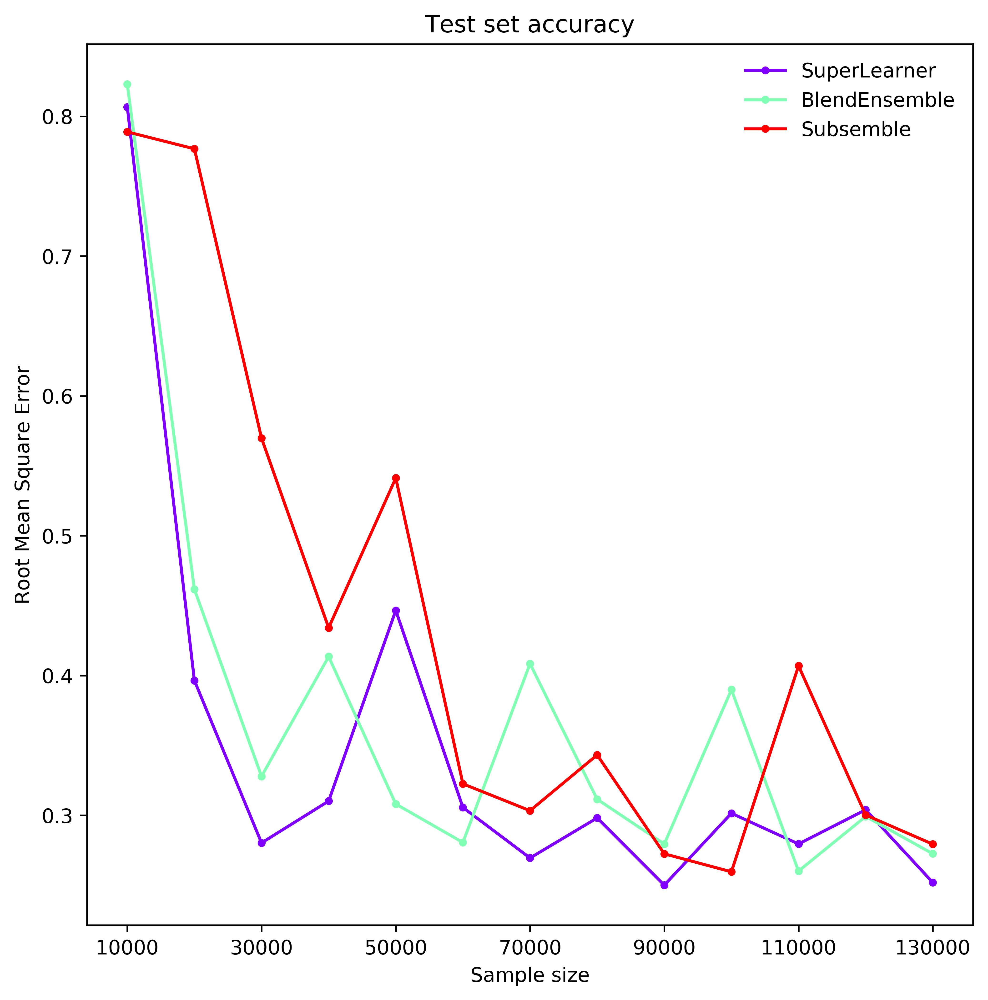
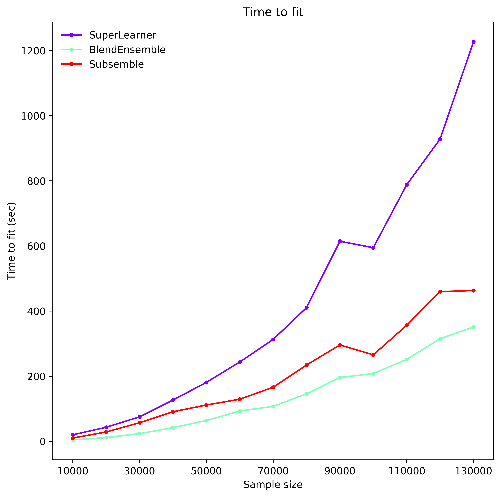

Scale benchmarks¶
The Single process vs multi-process benchmark compares how running ensembles on a single process fares against running them on multiple processes.
The Ensemble comparison benchmark compares ensemble classes in terms of time to fit and predictive power as data scales.
Single process vs multi-process¶
We compare the time to fit the SuperLearner and the
BlendEnsemble when run on a single process and when run on four
processes. The ensembles have four SVR base estimators and an SVR as final
meta learner. Hence, while the single-processed ensembles need to fit 5
SVR models consecutively, the multiprocessed ensembles need only the time
equivalent to fit 2 consecutively. As the figure below shows, there are clear
benefits to multi-processing.
To replicate the benchmark, in the mlens benchmark folder, execute:
>>> python scale_cpu.py
ML-ENSEMBLE
Threading performance test for data set dimensioned up to (10000, 50)
Available CPUs: 4
Ensemble architecture
Num layers: 2
Fit per base layer estimator: 2 + 1
layer-1 | Estimators: ['svr-1', 'svr-2', 'svr-3', 'svr-4'].
layer-2 | Meta Estimator: svr
FIT TIMES
samples
1000 SuperLearner (1) : 0.88s | BlendEnsemble (1) : 0.35s |
1000 SuperLearner (4) : 0.71s | BlendEnsemble (4) : 0.41s |
2000 SuperLearner (1) : 2.82s | BlendEnsemble (1) : 0.76s |
2000 SuperLearner (4) : 1.51s | BlendEnsemble (4) : 0.59s |
3000 SuperLearner (1) : 6.04s | BlendEnsemble (1) : 1.56s |
3000 SuperLearner (4) : 2.96s | BlendEnsemble (4) : 0.90s |
4000 SuperLearner (1) : 10.94s | BlendEnsemble (1) : 2.79s |
4000 SuperLearner (4) : 7.92s | BlendEnsemble (4) : 1.53s |
5000 SuperLearner (1) : 18.45s | BlendEnsemble (1) : 4.58s |
5000 SuperLearner (4) : 8.52s | BlendEnsemble (4) : 2.26s |
6000 SuperLearner (1) : 27.48s | BlendEnsemble (1) : 7.24s |
6000 SuperLearner (4) : 15.06s | BlendEnsemble (4) : 3.41s |
7000 SuperLearner (1) : 38.73s | BlendEnsemble (1) : 8.62s |
7000 SuperLearner (4) : 18.21s | BlendEnsemble (4) : 4.41s |
8000 SuperLearner (1) : 52.08s | BlendEnsemble (1) : 12.10s |
8000 SuperLearner (4) : 23.43s | BlendEnsemble (4) : 4.95s |
9000 SuperLearner (1) : 61.70s | BlendEnsemble (1) : 14.58s |
9000 SuperLearner (4) : 28.55s | BlendEnsemble (4) : 8.45s |
10000 SuperLearner (1) : 75.76s | BlendEnsemble (1) : 18.72s |
10000 SuperLearner (4) : 32.71s | BlendEnsemble (4) : 7.52s |
Benchmark done | 00:09:00
Ensemble comparison¶
We compare the time to fit a Super Learner, Subsemble and Blend ensemble when run on four processes as data scales from 20 000 to 260 000 observations with 20 dense real valued features.
Each ensemble has the same set of base learners and meta learners, all initiated at standard parameter settings. Each model is fitted on half the observations and predict the other half. The data is generated as per the Friedman 1 process (see Performance benchmarks).
The super learner tends to give best performance (rmse), but generally all classes achieve similar accuracy scores. However, the super learner (with 2 folds) takes more than twice as long to fit than a subsemble (with 3 partitions and 2 folds on each partition), and up to three times as long as the Blend ensemble (with 50% split). The subsemble tends to perform better than the blend ensemble after 70000 observations and has a similar fit time. In fact, it can be made more time efficient if the number of partitions is increased. This can significantly impact optimal meta learner parameter settings and overall performance.
 To replicate the benchmark, in the mlens benchmark folder, execute:
>>> python scale_ens.py
ML-ENSEMBLE
Ensemble scale benchmark for datadimensioned up to (250000, 20)
Available CPUs: 4
Ensemble architecture
Num layers: 2
layer-1 | Estimators: ['svr', 'randomforestregressor', 'gradientboostingregressor', 'lasso', 'mlpregressor'].
layer-2 | Meta Estimator: lasso
SCORES (TIME TO FIT)
Sample size
20000 SuperLearner : 0.807 ( 19.83s) | BlendEnsemble : 0.823 ( 4.09s) | Subsemble : 0.789 ( 9.84s) |
40000 SuperLearner : 0.396 ( 42.94s) | BlendEnsemble : 0.462 ( 11.37s) | Subsemble : 0.777 ( 28.49s) |
60000 SuperLearner : 0.280 ( 75.08s) | BlendEnsemble : 0.328 ( 23.43s) | Subsemble : 0.570 ( 56.93s) |
80000 SuperLearner : 0.310 (126.59s) | BlendEnsemble : 0.414 ( 41.75s) | Subsemble : 0.434 ( 90.66s) |
100000 SuperLearner : 0.447 (180.77s) | BlendEnsemble : 0.308 ( 63.80s) | Subsemble : 0.541 (111.31s) |
120000 SuperLearner : 0.306 (243.34s) | BlendEnsemble : 0.281 ( 92.71s) | Subsemble : 0.323 (129.15s) |
140000 SuperLearner : 0.269 (312.58s) | BlendEnsemble : 0.408 (107.19s) | Subsemble : 0.303 (165.86s) |
160000 SuperLearner : 0.298 (410.33s) | BlendEnsemble : 0.312 (145.76s) | Subsemble : 0.343 (234.12s) |
180000 SuperLearner : 0.250 (614.27s) | BlendEnsemble : 0.279 (195.74s) | Subsemble : 0.272 (295.76s) |
200000 SuperLearner : 0.301 (594.41s) | BlendEnsemble : 0.390 (208.11s) | Subsemble : 0.260 (265.42s) |
220000 SuperLearner : 0.280 (787.79s) | BlendEnsemble : 0.260 (251.45s) | Subsemble : 0.407 (356.17s) |
240000 SuperLearner : 0.304 (928.15s) | BlendEnsemble : 0.299 (314.76s) | Subsemble : 0.300 (459.59s) |
260000 SuperLearner : 0.252 (1226.66s) | BlendEnsemble : 0.273 (350.77s) | Subsemble : 0.279 (462.97s) |
Benchmark done | 04:20:34